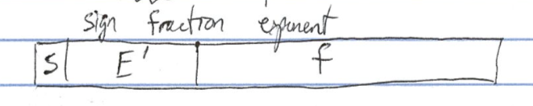
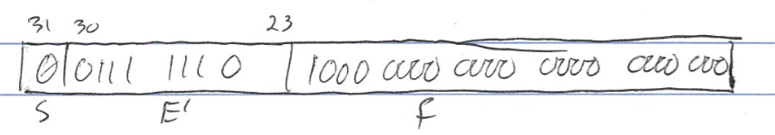
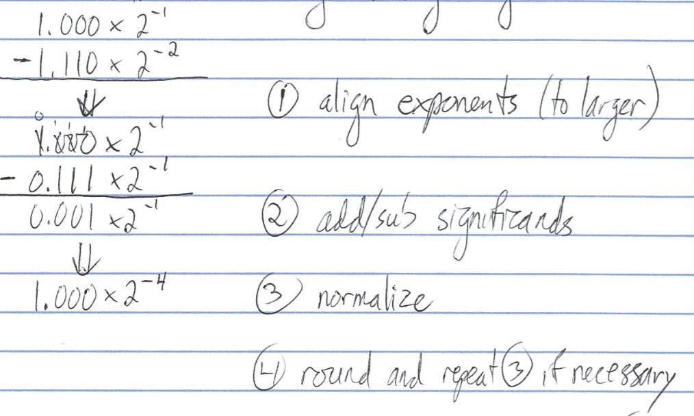
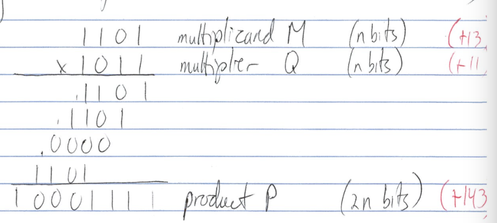
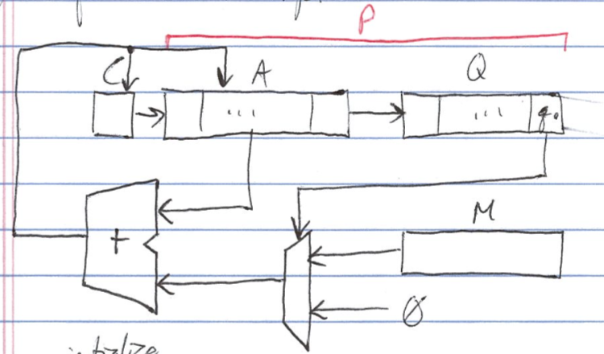
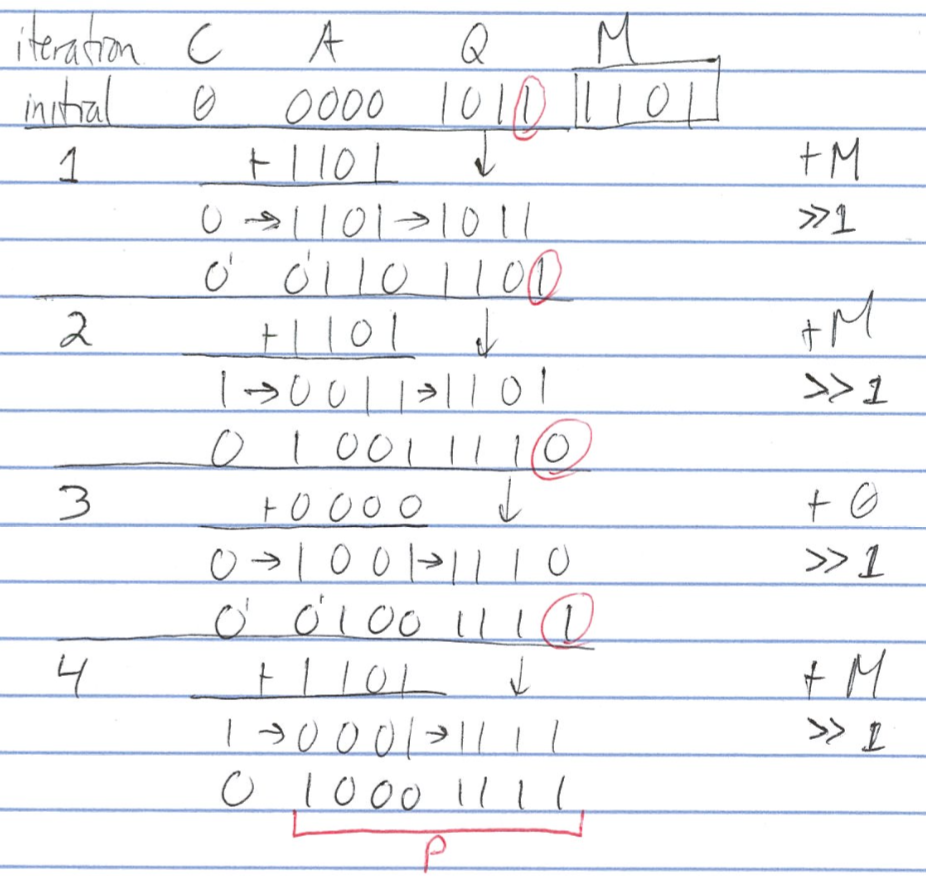
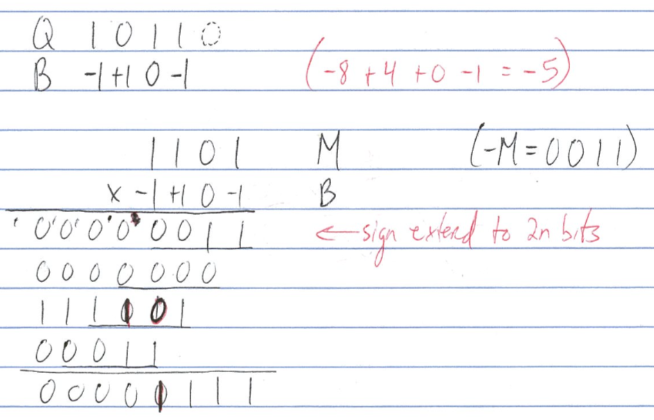
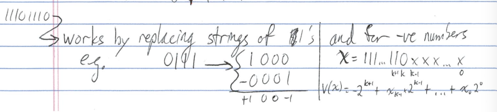
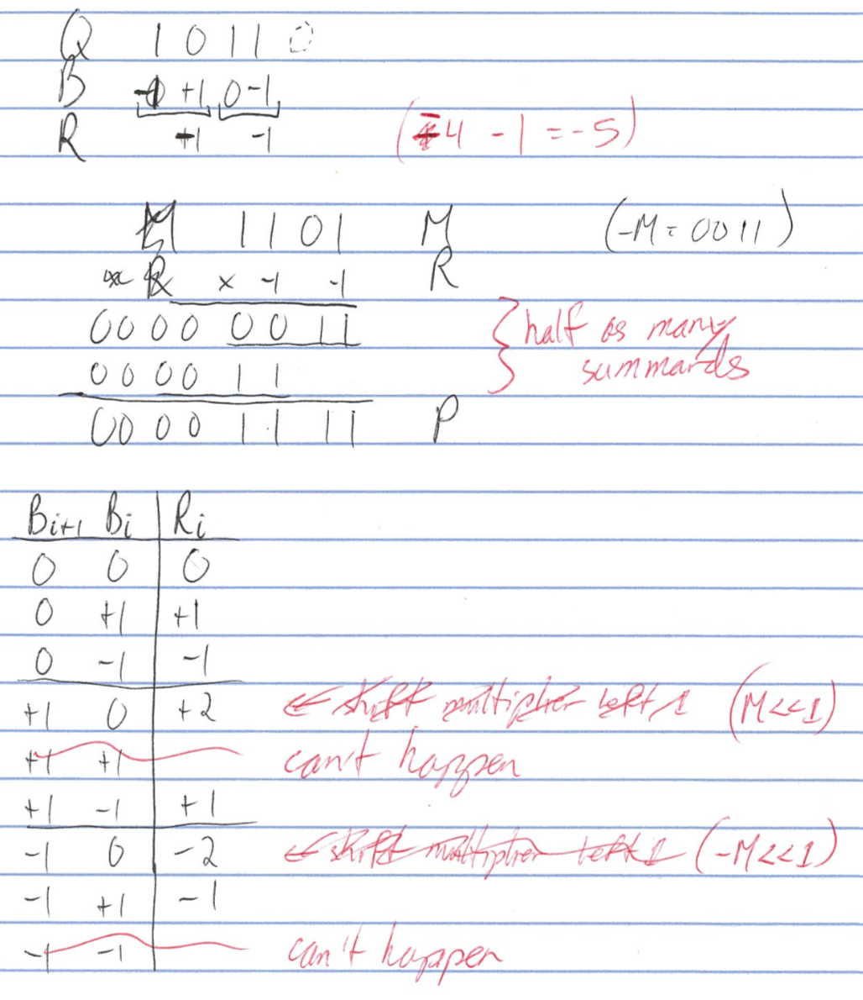
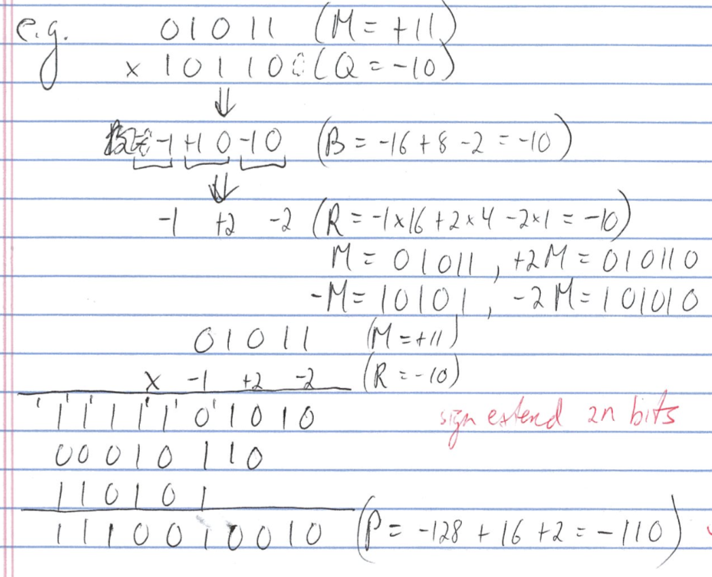

e.g. F = ± 1.xxx * 2E

| "precision" | S | E' | f | total | magnitude | precision |
|---|---|---|---|---|---|---|
| 4 byte single | 1 | 8 | 23 | 32 | [2 x 10 -38, 2 x 10 38] | 7 decimal places |
| 8 byte double | 1 | 11 | 52 | 64 | [2 x 10 -308 , 2 x 10 308 ] | 15 decimal places |
s.p.
f : doesn't encode leading one
e.g. represent 0.75 10 in s.p. format
0.75 x 2 = 1.5
0.75 10 = 0.11 2 = 1.1 x 2 -1 (normalized)S = 0, f = 1, E' = -1 + 127 = 126 = 0111 1110 
E' reserved values: 0000 0000, 1111 1111
| E' | f | value |
|---|---|---|
| 0000 0000 | zero | 0 |
| 0000 0000 | non-zero | denormalized, very small results |
| 1111 1111 | zero | infinity |
| 1111 1111 | non-zero | NaN |
denormalized representation (s.p): F = (-1) s x 0.f x 2 -126
e.g. 1 x 2 -1 - 1.11 x 2 -2 using 4 sig dis

if dividing, subtract exponents and add bias
IEEE543: intermediate results keep 3 extra bits
x = 1.b-1b-2...b-23b-24b-25b-26
rounding schemes: truncation, Von Neumann, round-to-nearest-even error ≡ round(x) - x
| b-24b-25b-26 | x |
|---|---|
| 000 - 111 | 1.b-1b-2...b-23 |
| error accumulates with successive operations |
| b-24b-25b-26 | x |
|---|---|
| 000 | 1.b-1b-2...b-23 -> |
| 001 - 111 | 1.b-1b-2...b-221 |
| error tends to cancel out with successive operations |
| b-24b-25b-26 | x |
|---|---|
| 000 - 011 | 1.b-1b-2...b-23 |
| 100 | 1.b-1b-2...b-23(b-23 == 0) |
| 100 | 1.b-1b-2...b-23 + 2-23(b-23 == 1) |
| 101 - 111 | 1.b-1b-2...b-23 + 2-23 |
| error w.r.t. b-23 ∈ [-.100, +.100] | |
| error tends to cancel out and has smaller range |
e.g.


e.g. iteration

e.g.
![signed multiplication][signed_multiplication]
Recode Q as B | Q"i" | Q"i-1" | B"i" | |:-:|:-:|:-:| | 0 | 0 | 0 | | 0 | 1 | +1| | 1 | 0 | -1| | 1 | 1 | 0 | Q"-1" ≡ 0
e.g.

e.g.

e.g.

e.g.

See previous chapter